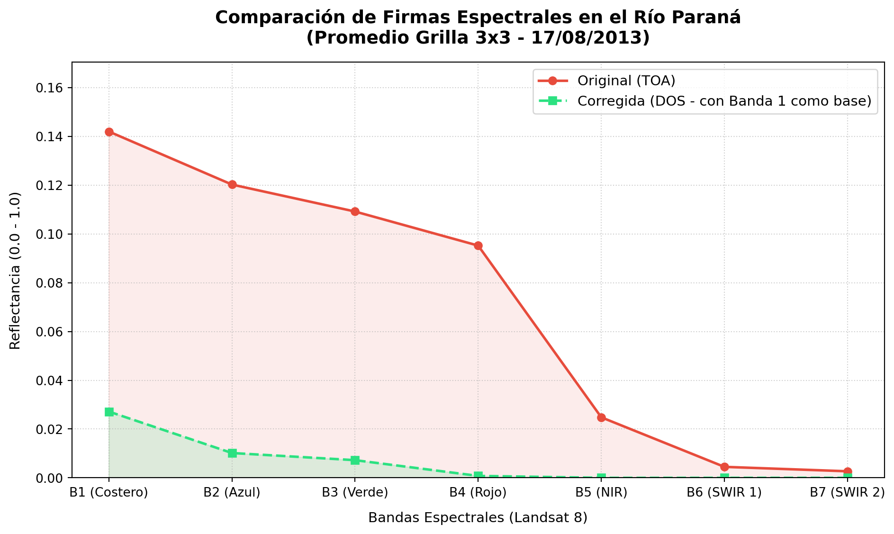
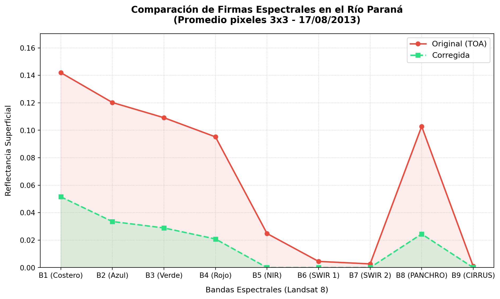

import ee
ee.Initialize(project='gistaq-2026')Corrección atmosférica
1 Correciones atmosféricas
1.1 Sustracción del objeto oscuro - Dark Object Subtraction (DOS)
Método DOS clásico
La mayoría de las técnicas de sustracción de objetos oscuros asumen que hay una alta probabilidad de que haya al menos algunos píxeles dentro de una imagen que deberían ser negros (0% de reflectancia). Esta suposición se hace porque en una sola banda hay un número muy grande de píxeles.
Un método denominado método del histograma permite al usuario seleccionar el valor de nebulosidad directamente del histograma de frecuencia de una imagen digital.
En estos histogramas usualmente hay un aumento muy pronunciado en el número de píxeles en algún valor X distinto de cero. Se supone que este valor X es la cantidad de neblina en esa banda en particular.
Si se usan en áreas muy localizadas, puede que no se encuentre un mínimo real u objeto oscuro, y el valor seleccionado corregirá en exceso la neblina atmosférica.
\[ ReflectanciaBOA=Reflectancia TOA-Haze(Banda) \]
- ReflectanciaBOA = Reflectancia en la superficie
- RefelctanciaTOA = Reflectancia tope de atmósfera
Método mejorado (Chávez)
Pueden surgir problemas en la etapa de análisis porque los valores seleccionados para la eliminación de neblina pueden no ajustarse a un modelo de dispersión atmosférica relativa realista. Esta falta de conformidad puede causar que los datos se sobrecorrijan en algunas o todas las bandas espectrales, y la relación espectral entre las bandas no será correcta.
El método propone selecionar un valor inicial de 1 banda en particular, para hacer la corrección en esa banda y en función de eso hacer las correcciones para las otras bandas.
Luego, el usuario selecciona un modelo de dispersión relativa que considere que representa mejor las condiciones atmosféricas al momento de la recopilación de datos.
Dos modelos de dispersión relativa bien conocidos son los modelos de Rayleigh y Mie
El modelo de Rayleigh establece que la dispersión relativa es inversamente proporcional a la cuarta potencia de la longitud de onda (k^-4), lo que significa que las longitudes de onda más cortas del espectro se dispersan mucho más que las longitudes de onda más largas
osea la banda del azul, es la mas sencible.
\[ Haze(Banda_i)=Haze(Banda_1)\left(\frac{\lambda_i}{\lambda_1}\right)^{k} \]
Valores de referencia para asignar k.
- Si la reflectancia B1 TOA <= 0.035 → k =4 (Muy claro)
- Si la reflectancia B1 TOA 0.035 < B1 TOA <= 0.050 → k = 2 (Claro)
- Si la reflectancia B1 TOA 0.050 < B1 TOA <= 0.065 → k= 1 (Moderado)
- Si la reflectancia B1 TOA 0.065 < B1 TOA <= 0.085 → k = 0.7 (Brumoso)
- Si la reflectancia B1 TOA > 0.085 → k = 0.5 (Muy brumoso)
Pasos:
- Delimitar un ROI grande que incluyan en lo posible algunas lagunas grandes y profundas.
- Buscar una imagen en la cual los píxeles que me interesan corregir no sean nubes. (con el QA píxel)
- Determinar el píxel oscuro de la banda 1. (Usar el percentil 1)
- En función del valor del pixel oscuro, asignar el valor de K, para ese día.
- Calcular el ruido para cada una de las bandas. Usando la ecuación
- Restar ese valor de ruido a la reflectancia de cada píxel en en cada banda.
Longitud de onda central de cada banda
- B1 443 nm
- B2 482 nm
- B3 562 nm
- B4 655 nm
- B5 865 nm
1.2 Prueba de corrección atmosférica
Conexión con Google Earth Engine
Defino grilla 3x3 (Zona de interés) y zona de búsqueda pixel oscuro
Verificación de ubicación de geometrías
una vez verificada la ubicación de las zonas de interés, buscamos una imagen despejada para probar nuestra ecuación de corrección atmosfércia.
Código
import pandas as pd
import numpy as np
import ee
# =====================================================================
# PASO 2: BÚSQUEDA AUTOMÁTICA DE IMAGEN CON FILTRO OPTIMIZADO
# =====================================================================
print("\n--- PASO 2: Buscando Automáticamente una Imagen Limpia ---")
# 1. Filtramos la colección de Landsat 8 TOA para todo el rango disponible
# Aplicamos un filtro nativo para nubes generales menor al 30% para acelerar el proceso
coleccion_completa = (ee.ImageCollection('LANDSAT/LC08/C02/T1_TOA')
.filterDate('2013-01-01', '2026-12-31')
.filterBounds(grilla_estudio_3x3)
.filter(ee.Filter.lt('CLOUD_COVER', 30))
.sort('CLOUD_COVER'))
# Extraemos la lista de imágenes disponibles
lista_features = coleccion_completa.getInfo().get('features', [])
print(f"Se encontraron {len(lista_features)} imágenes despejadas en la órbita.")
print("Inspeccionando tus 9 píxeles exactos hasta hallar la primera escena limpia...\n")
imagen_perfecta = None
id_seleccionado = None
# Recorremos las imágenes de la lista
for escena in lista_features:
id_actual = escena['id']
img_evaluar = ee.Image(id_actual)
try:
# CORRECCIÓN CRÍTICA: Añadido .select('QA_PIXEL') para procesar solo esa banda
qa_parana = img_evaluar.select('QA_PIXEL').reduceRegion(
reducer=ee.Reducer.toList(),
geometry=grilla_estudio_3x3,
scale=30
).getInfo().get('QA_PIXEL')
if not qa_parana:
continue
# Decodificar bits (Bit 7=Agua, Bit 3=Nube, Bit 4=Sombra de nube)
es_agua_parana = [(int(v) & 128) > 0 for v in qa_parana]
tiene_nube_parana = [(int(v) & 8) > 0 for v in qa_parana]
tiene_sombra_parana = [(int(v) & 16) > 0 for v in qa_parana]
# FILTRO EXIGENTE DE CLIMA (0% nubes, 0% sombras en tu zona de estudio)
if not any(tiene_nube_parana) and not any(tiene_sombra_parana):
imagen_perfecta = img_evaluar
id_seleccionado = id_actual
print(f"🟢 ¡Imagen ideal encontrada!")
print(f"👉 ID Oficial de la imagen sin nubes: '{id_seleccionado}'")
print(f"ℹ Nota informativa: {sum(es_agua_parana)} de 9 píxeles pasaron la máscara automática de agua.")
break
except Exception as e:
# Muestra el error en consola si algo falla en la conexión para saber qué pasa
print(f"⚠️ Error al leer la escena {id_actual}: {str(e)}")
continue
# =====================================================================
# PASO 3: EXTRACCIÓN DEL PÍXEL OSCURO EN LA LAGUNA
# =====================================================================
if imagen_perfecta is not None:
print("\n--- PASO 3: Extrayendo el Píxel Oscuro de la Laguna ---")
# Enmascaramos nubes y sombras locales dentro de la Laguna Grande por seguridad
qa_band = imagen_perfecta.select('QA_PIXEL')
mascara_limpia = qa_band.bitwiseAnd(8).eq(0).And(qa_band.bitwiseAnd(16).eq(0))
banda1_laguna_limpia = imagen_perfecta.select('B1').updateMask(mascara_limpia)
# Calcular el Percentil 1 de reflectancia TOA en la banda 1 de la laguna
# Corregido: ee.Reducer.percentile([1]) requiere pasar la lista con el número del percentil
pixel_oscuro_b1 = banda1_laguna_limpia.reduceRegion(
reducer=ee.Reducer.percentile([1]),
geometry=ROI_laguna,
scale=30
).getInfo().get('B1')
print(f"🟢 ¡Píxel oscuro calculado con éxito!")
print(f"➡ El valor del Píxel Oscuro (Percentil 1) en la Banda 1 es: {pixel_oscuro_b1}")
print("\n[Estructura base completada. Código listo para recibir tus ecuaciones matemáticas]")
else:
print("❌ Error: No se encontró ninguna imagen completamente libre de nubes/sombras en el rango de fechas.")Buscamos una imagen limpia para probar
la imagen de prueba es la
LANDSAT/LC08/C02/T1_TOA/LC08_226079_20130817
1.3 Corrección con B1 (Aerosol costero)
firma especral

1.4 Corrección con B2 (Azul)
Firma espectral
